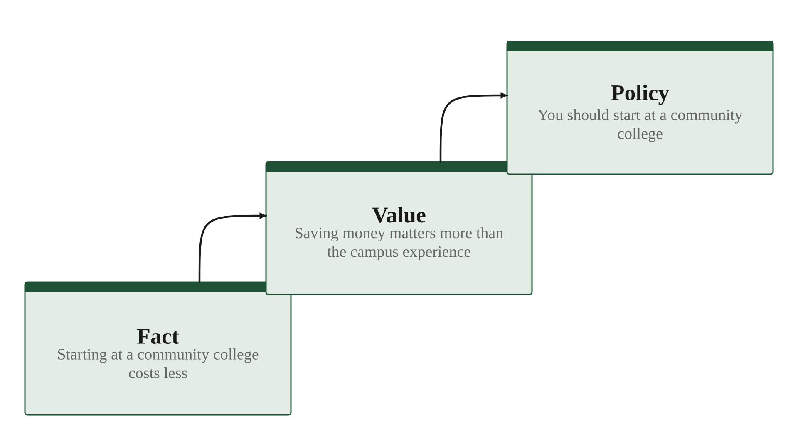

Chapter 6: Debating Facts
In this chapter
- Objectives
- Key terms
- The idea
- 6.1 What a fact debate asks
- 6.2 The criterion: preponderance of evidence
- 6.3 Stock issues and burdens
- 6.4 The Contention Model up close
- 6.5 Building a fact case
- 6.6 Answering a fact case
- 6.7 What a settled fact hands forward
- Say it
- Worked examples
- A personal decision
- A global prediction
- How a judge weighs it
- Common mistakes
- Practice
- Check questions
Move: Build. Builds on: Chapters 2 and 3. Where you use it: every fact debate, and any time a value or policy debate turns on whether something is true.
Objectives
By the end of this chapter you should be able to:
- Explain what a fact resolution asks and why it is decided by a preponderance of evidence.
- Name the stock issues of a fact debate and the burden each side carries.
- Build a contention with a title, a claim, warrants and an implication.
- Write the top of a fact case: definitions and the criterion.
- Answer a fact case with refutation and counter-contentions.
- Explain what a settled fact hands to the value and policy debates that follow it.
Key terms
Fact resolution, criterion, preponderance of evidence, stock issues, topicality, contention, counter-contention, title, claim, warrant, implication, burden of proof, burden of rejoinder, top of case, definition.
The idea
6.1 What a fact debate asks
A fact resolution asks whether something is, was or will be true. It does not ask whether that thing is good, and it does not ask anyone to do anything. Chapter 3 gave you the markers: words like is, are, has and will, and a question you could, at least in principle, check against the world. "Starting at a community college costs less than starting at a four-year university" is a fact resolution. So is "Climate change is irreversible." So is the resolution this book uses for its fact debate: "Artificial intelligence will cause more job creation than job displacement."
That last one is a predictive fact. Nobody can check it yet, because the future has not happened. A predictive fact debate is not about who knows the future. It is about which prediction the evidence better supports: trends, expert forecasts, and what has happened when similar technologies arrived before. That makes predictive facts some of the most interesting fact debates, because the evidence is real but incomplete, and both sides have room to work.
Fact debates can look like the easy warm-up before the "real" debates about values and policies. They are not. Almost every value or policy argument rests on a factual claim somewhere underneath it. An argument that AI does more harm than good, or that the government should restrict it, collapses if the facts about what AI does turn out to be wrong. Learning to debate facts is learning to test the ground every other argument stands on.
6.2 The criterion: preponderance of evidence
Every debate needs a criterion, the standard the judge uses to decide who won. Without one, a judge has to invent a standard, and two judges watching the same debate could invent different ones. Stating the criterion out loud tells the judge exactly what question to answer.
The criterion for a fact debate is preponderance of evidence: the side whose evidence and reasoning, taken together, better support its answer to the resolution wins. The term comes from civil law, where it means that a claim is more likely true than not. That definition carries three lessons for debaters.
First, the affirmative does not need certainty. "More likely than not" is a much lower bar than "beyond a reasonable doubt," the standard in criminal trials. An affirmative arguing that AI will create more jobs than it displaces does not have to prove the future. It has to show the evidence leans its way.
Second, quality counts as much as quantity. One careful study of a thousand employers outweighs three blog posts repeating the same guess. When two pieces of evidence conflict, the judge asks which is better: more recent, more directly about the resolution, from a source in a position to know. Chapter 8 covers judging source quality in depth.
Third, reasoning counts too. Preponderance of evidence sounds like a contest of citations, but a judge also weighs the logic connecting the evidence to the claim. A well-explained warrant with modest evidence can beat a big statistic that nobody explains.
6.3 Stock issues and burdens
Stock issues are the minimum elements an affirmative needs to win a resolution. If any one is missing, the affirmative has not done its job, however good the rest of its case is. A fact debate has three.
Topicality means the affirmative's arguments must prove the resolution itself is true, not a claim that sounds close to it. An affirmative that proves AI will create thousands of jobs building data centers has proved something true, but not the resolution, which asks whether creation will outrun displacement. Topicality keeps the debate on the question the resolution asks.
The criterion is the second stock issue. In a fact debate the criterion is almost always preponderance of evidence, so this stock issue is usually met with a single sentence. It still needs saying, because it tells the judge how to decide and gives you something to point back to in your last speech.
Contentions are the third. A contention is a major argument, built in the Contention Model, that proves the resolution true. An affirmative needs at least one. Most fact cases run two or three, because a case with one contention can be beaten by beating one argument.
Each side also carries a burden, a job it must do to have a chance of winning. The affirmative has the burden of proof: it must prove the resolution true. If the evidence ends up truly even, the affirmative has not met that burden, and the negative wins. (Chapter 3 called this presumption.) The negative has the burden of rejoinder: it must respond to the affirmative. (After that, as Chapter 3 explained, the burden passes to whoever speaks next.) A negative that ignores the affirmative's contentions and talks about something else leaves those contentions standing, and under preponderance of evidence, an unanswered argument with any support beats no argument at all.
At a glance
| Term | What it requires | Who it belongs to |
|---|---|---|
| Topicality | Arguments that prove the resolution itself, not a nearby claim | Affirmative |
| Criterion | A stated standard for deciding: preponderance of evidence | Affirmative (both sides argue under it) |
| Contentions | At least one argument, in the Contention Model, proving the resolution true | Affirmative |
| Burden of proof | Prove the resolution true; a tie goes to the negative | Affirmative |
| Burden of rejoinder | Respond to the affirmative's arguments | Negative |
6.4 The Contention Model up close
Chapter 2 introduced the Contention Model. Here we build one contention, piece by piece, for the affirmative on the AI resolution.
The title is a short label for the contention, two to four words. Its job is practical: it gives the judge a heading to write on the flow and gives both sides a name to use for the rest of the debate. Make it efficient, not clever. "Net job growth" tells the judge what the contention is about. "The robots are hiring" makes the judge guess. Our title will be "Net job growth."
The claim is the single sentence the contention proves, the contention's thesis. A strong claim states what is true and, ideally, why: "AI will create more jobs than it displaces, because the technology that automates old tasks also creates demand for new kinds of work." A judge who hears only the claim should already know what the contention argues.
The warrants are the evidence and reasoning that prove the claim: Toulmin's grounds, warrant and backing from Chapter 2, gathered in one place. A contention usually has two or three, each introduced with a signpost. Our first warrant is evidence. In its Future of Jobs Report 2025, the World Economic Forum surveyed more than 1,000 large employers and estimated that, by 2030, AI and information-processing technology will create about 11 million jobs and displace about 9 million. Our second warrant is historical. A 2024 study led by MIT economist David Autor found that about 60 percent of U.S. workers are employed in occupations that did not exist in 1940. New technology has repeatedly created kinds of work nobody predicted. Each warrant gives the judge a separate reason to believe the claim, so losing one does not lose the contention.
The implication explains why the claim matters for the resolution, and it is the part beginning debaters most often skip. Without it, the judge has a true statement and no instructions. Ours: "Because the employers closest to the technology expect it to create more jobs than it removes, and because past technologies have done the same, the preponderance of evidence says the resolution is true." Notice that the implication ties the contention back to the criterion. That is what turns a fact into a reason to vote.
Delivered with signposting, the contention sounds like this: "My first contention is net job growth. My claim is that AI will create more jobs than it displaces. My first warrant is the World Economic Forum's 2025 survey of over a thousand employers, which expects AI to create about 11 million jobs and displace about 9 million by 2030. My second warrant is history..."
At a glance
| Part | What it does | Example |
|---|---|---|
| Title | Labels the contention for the flow | Net job growth |
| Claim | States what the contention proves | AI will create more jobs than it displaces. |
| Warrants | Supply the evidence and reasoning | World Economic Forum employer survey; 60 percent of U.S. jobs are in occupations that did not exist in 1940. |
| Implication | Explains why the claim proves the resolution under the criterion | The preponderance of evidence says creation will outrun displacement. |
6.5 Building a fact case
A complete affirmative case has two layers. The top of case comes first and sets the terms of the debate: definitions and the criterion. The contentions come after it and do the proving.

A definition states what a key word in the resolution means for this debate. Define the terms that could reasonably be read more than one way, take each definition from a real source as Chapter 3 showed, and keep it short enough to say in one sentence. Definitions look like a formality, but in a fact debate they can decide the outcome, because they decide what counts as evidence. Take the AI resolution. The same World Economic Forum report that expects AI and information processing to add jobs on net expects robotics and autonomous systems to be the largest net job destroyer of any technology trend, with a net loss of about 5 million jobs. If "artificial intelligence" includes robots, the numbers shift against the affirmative. If it means software that performs tasks requiring human-like judgment, they do not. Both sides should notice that before the debate starts, because a judge will.
The criterion follows the definitions, usually in one sentence: "The standard for this debate is preponderance of evidence: whichever side better supports its answer with evidence and reasoning should win." Then come the contentions, each signposted. Two well-built contentions usually beat four thin ones, because a thin contention gives the negative an easy target and costs you time you could spend extending what is working.
The negative builds its own case the same way, with one difference. Its arguments are called counter-contentions, contentions that prove the resolution false. A negative does not have to run counter-contentions; refuting the affirmative can be enough. But counter-contentions give the judge a positive reason to vote negative rather than only reasons to doubt the affirmative, and under preponderance of evidence that matters. A judge comparing two sets of evidence needs something on the negative's side of the scale.
6.6 Answering a fact case
The negative's burden of rejoinder means answering each contention. Chapter 4's four steps (signal, state, support, summarize) work here, and Chapter 2's lesson about warrants points you to the best target. Look for the connection between the evidence and the claim, and test it.
Against the net job growth contention, the negative has several answers. It can attack the warrant: the World Economic Forum figures are employer expectations, not measured outcomes, and a gap of 2 million jobs out of 20 million is small compared with how wrong forecasts can be. It can attack the historical warrant: the same MIT research found that automation's negative effects on employment were more than twice as large from 1980 to 2018 as from 1940 to 1980, so the past may not be a reassuring guide. It can raise the definition, as above, and argue that robots belong inside "artificial intelligence." And it can run a counter-contention of its own.
That last option comes with a warning. Suppose the negative finds a Goldman Sachs Research estimate that widespread AI adoption could displace 6 to 7 percent of the U.S. workforce. That sounds like strong negative evidence. But the same report's authors wrote that they remained skeptical AI would lead to large employment reductions over the next decade, and they expected the displacement to be temporary as new jobs appear. An affirmative who has read the whole report will use the negative's own source against it. The lesson: before you read a piece of evidence, read the rest of the source, and make sure it does not argue the opposite of what you are using it to prove.
After the answers, both sides compare. Under preponderance of evidence, the final speeches should not just repeat evidence. They should tell the judge why their evidence is better: more recent, more directly about the resolution, wider in scope, or harder to dispute. The judge's question is not "who had evidence?" Both sides will. It is "whose evidence, on balance, is more convincing?"
6.7 What a settled fact hands forward
This book's debates run in a sequence on one subject: fact, then value, then policy. The order is deliberate. Whatever a judge concludes in a fact debate becomes something the later debates can build on.

Take the individual-level example. If you establish as a fact that starting at a community college costs less, the value question becomes sharper: does saving money matter more than the experience of four years on one campus? And if saving money wins the value debate, the policy question nearly answers itself: you should start at a community college. Each debate inherits its premises from the one before it.
The AI sequence works the same way. If the fact debate establishes that AI will create more jobs than it displaces, the value debate over whether AI does more harm than good starts with a point on one side of the scale. If the fact debate goes the other way, the point moves. Chapter 13 shows how to use a fact you have already won inside a value debate. For now, notice that winning a fact debate is never only about that day's ballot.
Say it
- Open the top of case: "Before my contentions, two definitions and a standard."
- State the criterion: "The standard is preponderance of evidence: whoever better supports their answer should win."
- Signpost a contention: "My first contention is net job growth. My claim is..."
- Signpost warrants: "My first warrant is... My second warrant is..."
- Deliver the implication: "This matters because..."
- Compare evidence: "Prefer our evidence for two reasons: it is more recent, and it measures outcomes instead of guesses."
Worked examples
A personal decision
Resolution: Starting at a community college costs less than starting at a four-year university.
The affirmative defines "costs" as tuition and fees and states the criterion. Its first contention, "Lower tuition," cites the College Board's Trends in College Pricing: in 2025–26, average published tuition and fees were \$4,150 for in-district students at public two-year colleges and \$11,950 for in-state students at public four-year universities. The implication: across two years, a student saves roughly \$15,600 in tuition and fees alone by starting at a community college.
The negative attacks the definition first. Published tuition is a sticker price, it argues, and "costs" should mean what a student actually pays after grants, plus what it costs to finish a degree. Its counter-contention, "Lost credits," argues that a transfer student whose credits do not transfer pays for extra semesters, which can erase the savings. (In a real debate the negative would need evidence for how often that happens; here it is the shape of the argument that matters.)
The judge's decision turns on the definition. If "costs" means tuition and fees, the affirmative's evidence is strong and directly on point. If it means the full cost of finishing a degree, the negative has raised a real question the affirmative must answer with evidence about transfer outcomes. A good affirmative sees this coming and defends its definition in its first speech.
A global prediction
Resolution: Artificial intelligence will cause more job creation than job displacement.
The affirmative runs two contentions. "Net job growth" uses the World Economic Forum's employer survey. "New work" uses the MIT finding that about 60 percent of today's U.S. jobs are in occupations that did not exist in 1940. The negative defines AI to include robotics, attacks the forecasts as expectations rather than outcomes, and runs one counter-contention, "Faster disruption," arguing from the same MIT research that automation's damage to employment has grown in recent decades.
In the last speeches, the affirmative argues its definition is the common one and that the negative's own historical evidence still shows new work being created. The negative argues that small forecast margins cannot carry a burden of proof. A judge applying preponderance of evidence might reasonably go either way, and that is the sign of a good fact resolution. What decides it is which side did the comparing.
How a judge weighs it
A judge in a fact debate asks one question: on balance, is the resolution more likely true than not? To answer it, the judge looks at which contentions survived the refutation, then compares the evidence and reasoning behind them. Judges reward debaters who do that comparison out loud, saying why one study beats another, rather than leaving the judge to sort it out. If the comparison is truly even, the judge votes negative, because the affirmative carries the burden of proof.
Common mistakes
- Skipping the implication. A warrant without an implication leaves the judge with a fact and no reason to vote.
- Proving a nearby claim. Showing that AI creates jobs is not the same as showing it creates more than it destroys.
- Treating definitions as a formality. In a fact debate, the definition often decides what counts as evidence.
- Reading evidence without reading the source. If the rest of the article says the opposite, your opponent will find it.
- Ending with more evidence instead of comparison. The last speech should tell the judge why your evidence is better.
Practice
Drill: contention build (15 minutes, pairs). Each partner picks a side of "Starting at a community college costs less than starting at a four-year university." Write one contention with a title, claim, two warrants and an implication. Deliver it to your partner in under one minute, with signposts. The listener flows it and names any part that was missing.
Writing exercise. Write the top of case for the affirmative on the AI fact resolution: definitions of "artificial intelligence," "job creation" and "job displacement," and a criterion statement. In 200 words, explain how a different definition of "artificial intelligence" would change which evidence counts.
Check questions
Choose an answer to see feedback. Nothing is recorded.
1. Under a preponderance of evidence standard, what must the affirmative show?
2. An affirmative on "AI will cause more job creation than job displacement" proves only that AI will create many jobs in data centers. Which stock issue has it failed?
3. Which part of a contention explains why the claim matters for the resolution?
4. In a fact debate, the judge decides the evidence on both sides is exactly even. Who should win?
5. A negative finds a report estimating AI could displace 6 to 7 percent of U.S. workers. Before reading it in a debate, what should the negative check?